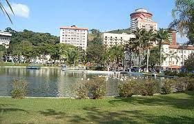
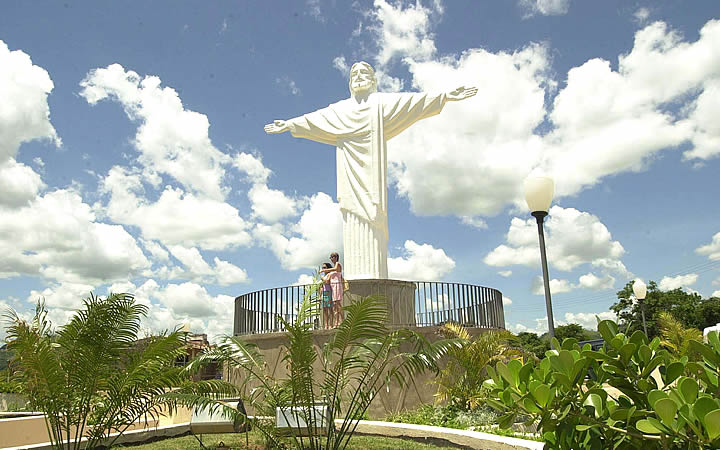
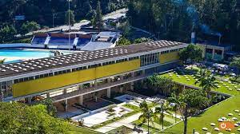

A praça Burle Marx
Projetada por Burle Marx, a praça é procurada para caminhadas e
passeios de charrete e trenzinho (que levam até o Cristo).
Além dos jardins bem-cuidados, a área abriga um grande lago para passear
de pedalinho e apeciar a fonte luminosa e sonora, que funciona todas as noites.
O espaço é também cenário para feiras de arte, artesanato e comidinhas,
que acontecem nos fins de semana, feriados e temporadas de verão e inverno. Eventos também costumam acontecer por ali, como a concorrida Exposição de Carros Antigos e os festivais
de Verão e de Inverno, com shows na concha acústica.

O Cristo
Independentemente do roteiro escolhido, o Cristo redentor no morro do cruzeiro é um ponto turístico que não deve deixar de faltar em nenhum. O local possui acesso de carro e estacionamento,
mas você pode subir com o o trenzinho turístico da cidade com saída na praça Adhemar de Barros.
Localizado a apenas 2 quilômetros da cidade, além de ser um lindo monumento histórico da cidade construído em 1960 e reformado em 2002, ainda permite uma bela vista panorâmica da cidade e das vizinhas, perfeito para contemplar a dois, em família ou mesmo sozinho.

O Balneário
Em 1913, Dr. Tozzi construía seu pequeno consultório de pau-a-pique para atender pessoas que passavam por esta região e, aos poucos, trazia para cá tudo o que seria necessário para a auto-suficiência de uma estância.
Em 1926, conseguiu, através de sua influência, trazer para cá a renomada cientista Madame Curie, prêmio Nobel de Química e Física que, analisando nossas águas, constatou suas propriedades terapêuticas.
